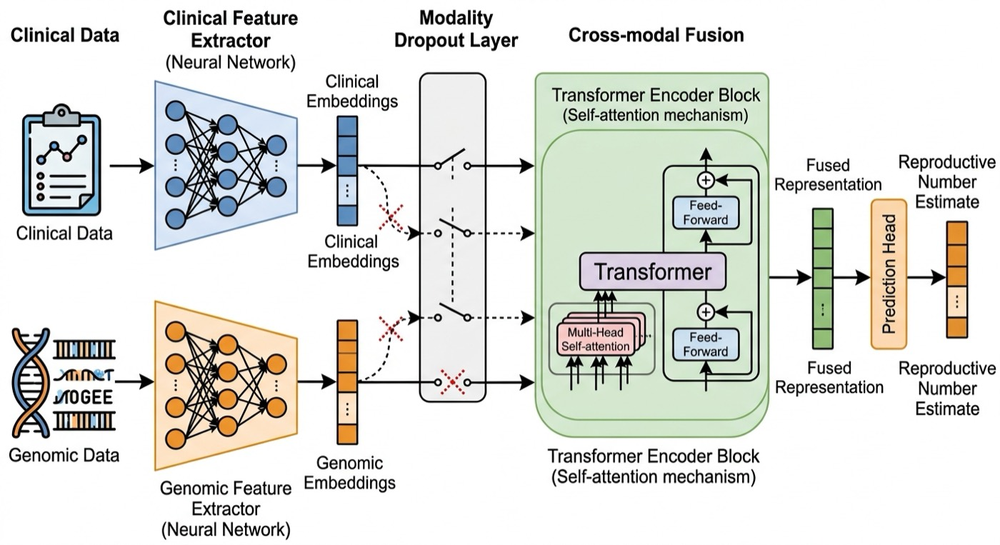

Within host · reference
R0WH
—
—
Wellcome Leap · AMPLIFY
New multiscale prototype
This mechanism explorer connects the new pieces of the repository. A simplified ODE tracks a plasmid across four bacterial backgrounds. Genomic linkage identifies which background acquired it; quantitative omics measures its abundance; and clinical context supplies antibiotic exposure and contact conditions. Those inputs determine two distinct effective reproduction numbers.
Within-host Re is the expected number of new bacterial backgrounds reached by one introduced donor lineage. Between-host Re is the expected number of secondary colonisations caused by one carrier, integrating their complete within-host trajectory. Reference values remove antibiotic exposure and set between-host susceptibility to one. Population-level R and Rt are intentionally out of scope.
Synthetic mechanism explorer—not a clinical estimate. The fitted multimodal emulator and ABM use these targets in the R pipeline; this browser view evaluates the mechanistic equations directly.
Choose a synthetic site, then vary the three shared biological parameters and the conditions that connect the within-host trajectory to transmission.
Selected scenario
Current conditions
Within host · reference
R0WH
—
—
Within host · current
ReWH
—
—
Between hosts · reference
R0BH
—
—
Between hosts · current
ReBH
—
—
Rows are recipient backgrounds and columns are donor backgrounds. Each entry is the probability that one introduced donor lineage establishes the pARG on that new background. The diagonal is zero because persistence on the original background is not a new acquisition.
Trajectory integration matters. Between-host Re integrates
1 − exp(−κp(t)) over carriage rather than substituting average abundance.
Product-form comparator: — · Simulated carriage: — days.
This original page was created by our team for the Wellcome Leap AMPLIFY proposal. It is a functional prototype: every number it shows comes from a model we actually fitted, evaluated in your browser, not from a mock-up. A user supplies whatever they have — a colonisation density, an organism identification, or only one of the two — and gets an interpretable estimate back immediately.
The two indicators below are exactly the two inputs the model was trained on: a quantitative measurement of how densely the individual is colonised, and the organism they carry. Their mapping onto the training data is one to one and is written out under How it works. The machinery — including the ability to estimate with one indicator missing — is real; the training data are simulated, so the numbers demonstrate the method rather than describing any real population.
Two indicators, and the model needs only one of them: the individual's colonisation density, the organism, or both. That is the point of it.
Estimated individual reproduction number
—
Waiting for input
How to read the flag. The estimate is an expected count of secondary infections from this one individual. Above 1.1 we flag outbreak potential: this individual is expected to more than replace themselves. Below 0.9 we flag self-limiting. In between we flag borderline rather than pretending the model can separate the two — realized secondary infections are far more variable than the width of that band, so a near-one estimate is a question, not an answer.
Synthetic qPCR and relative-abundance measurements describe pARG burden. Genomic linkage says whether the same pARG has appeared on a new bacterial background. Clinical context supplies antibiotic exposure, contacts, and the susceptible fraction.
The simplified fit estimates three shared quantities: horizontal transfer h, division-coupled segregational loss γ, and antibiotic selection δ. Four genomic backgrounds make the linkage matrix informative without making the first fit unidentifiable.
A seed-normalized next-generation matrix yields within-host reference and effective R. The within-host resistant-fraction trajectory is integrated with contacts and susceptibility to yield between-host reference and effective R. These are expectations, not realized event counts.
The native-R torch emulator learns the four mechanistic targets under deliberate modality masking. The ABM receives the fitted biological parameters and represents contacts and paired interventions; it does not need ML to rediscover the ODE.

This is the design the full project builds. The new R pipeline implements the same principle with native R torch and blockwise masking. The legacy surrogate uses two inputs and a small dense network, which is why it can already demonstrate estimation with one modality missing.
The first tab evaluates the simplified ODE, seed-normalized next-generation matrix, and trajectory-integrated between-host calculation directly in the browser. Its controls match the synthetic configuration used by the R implementation.
The second tab preserves the originally published two-input neural surrogate. It is useful for demonstrating deliberate information loss and browser-side inference, but it is not presented as the multiscale model or as evidence about a real organism.
Scripts keep simulation, fitting/training, and prediction/reporting runnable as separate phases. The browser deliberately avoids committing generated data or fitted multiscale weights; it runs the transparent mechanism instead.
Functional prototype Runs entirely in your browser No data leaves this page
The fitted surrogate takes exactly two things, and the estimator exposes exactly those two. The mapping is one to one, so any estimate on the legacy tab can be traced straight back to a row of the training data:
| Indicator in the app | Model input | Mapping |
|---|
The feature the simulation generates is standard normal and carries no clinical units of its own, so
the page reads colonisation density as a z-score against an assumed population mean and standard
deviation. Those two constants, the slider range, and the organism names live in
app/site.json and can be edited without touching any code. Everything downstream of the
z-score — the network, the missing-modality behaviour, the estimate — is the fitted model.
The organism choice is a relabelling of the same kind: the simulation calibrates a lower- and a higher-transmission organism under two illustrative transmission settings, and the page names them so the contrast is concrete. The estimates are not organism-specific evidence about either species, and the density scale is illustrative rather than fitted to patient data.
Weights exported from the fitted model on —.
The prototype exposes two indicators because the simulation that trained it has two. The production tool is designed around the same missing-modality machinery, applied to real inputs: users will be able to upload or connect clinical data (cultures, treatment and antibiotic exposure, comorbidities, admissions), sociodemographic data (household structure, occupation, contact patterns, sanitation and environmental context), and omics data (isolate genomes, plasmid and resistance-gene content, microbiome composition) — and, in principle, further modalities such as environmental surveillance or facility movement records.
Crucially, none of these is required. The training strategy demonstrated here — randomly withholding modalities so the network learns to condition on what is actually present — is what lets a user estimate with whatever they happen to have, rather than being locked out for lacking a data type.
The model file could not be loaded.
If you opened this page directly from disk, your browser blocks the local fetch. Serve the
folder instead:
python3 -m http.server --directory app 8000then open http://localhost:8000.